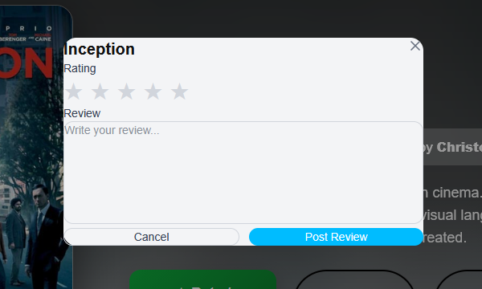
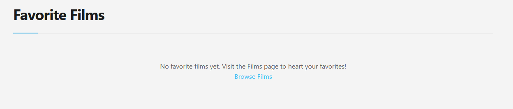
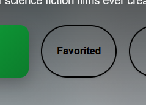
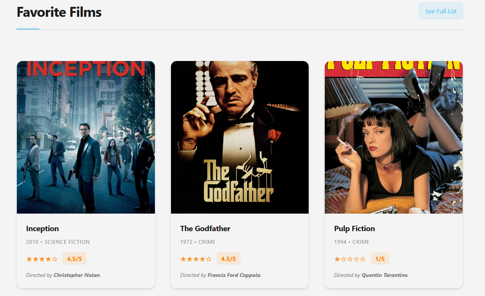
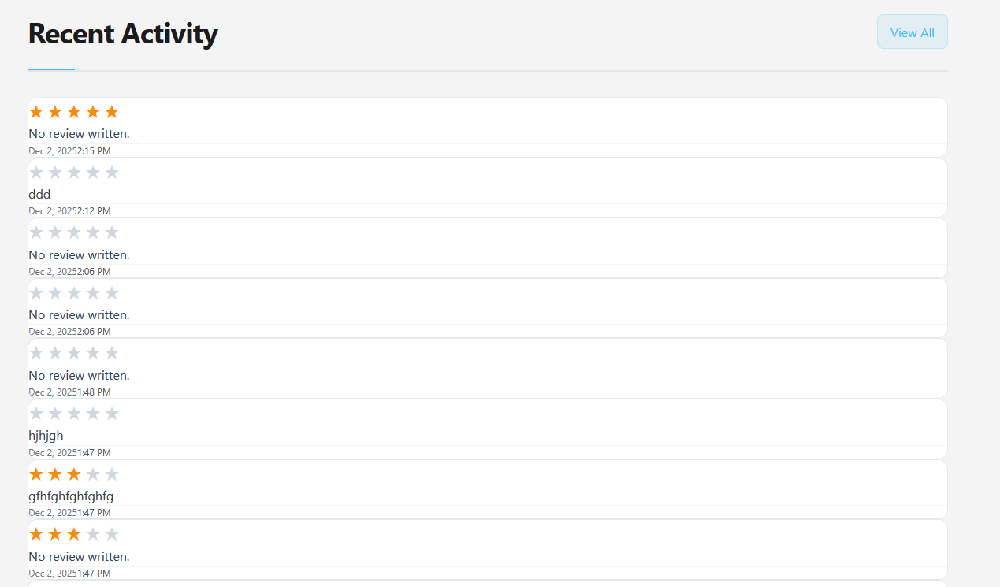
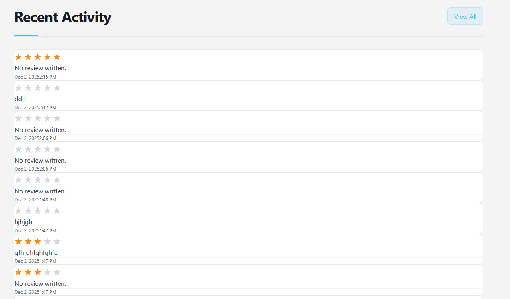
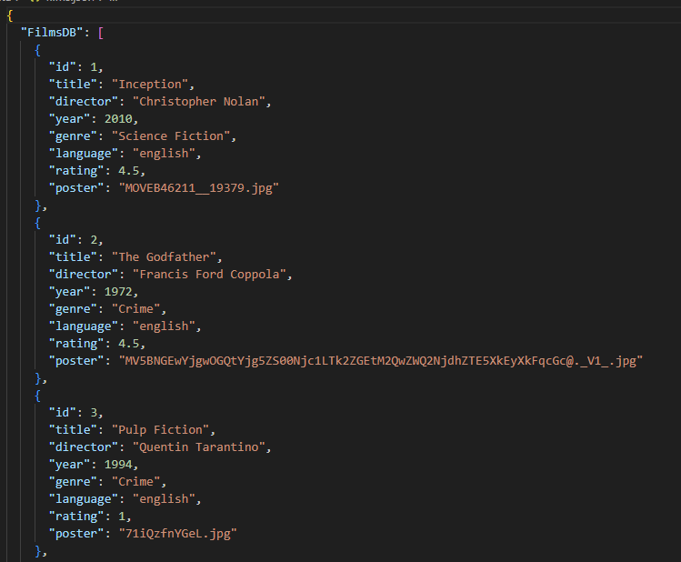
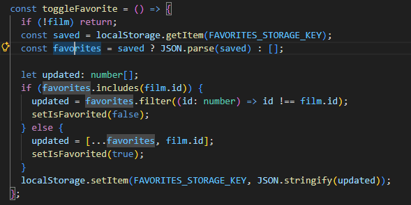
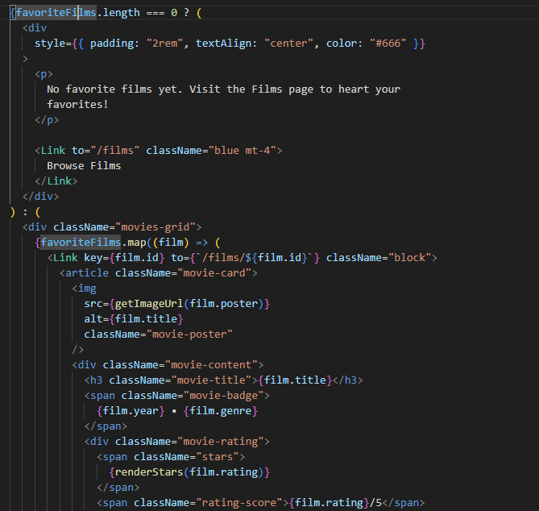

Overview
Project Name: Letterboxd Redesign
My Role: Information Architect
Team Size: 6
Duration: 4 months
Contributions
Features I built
- Favorited films appear on profile and are responsive
- Responsive film log that appears on profile
- Film page dynamically loads films from database



 

Technologies Used
- HTML
- CSS
- Typescript
- React
- Node.js
- Figma
My Journey
I learned a great deal during this project. Both technical skills as well as soft skills. On the technical side, I improved my react knowledge and also learned tailwind. On the soft skills side, I learned how to better communicate with team members and manage my time effectively.
My main challenge was using my time effectively, espeically with only 3 weeks to implement the final project. To overcome this, I made a detailed schedule and stuck to it as closely as possible.


